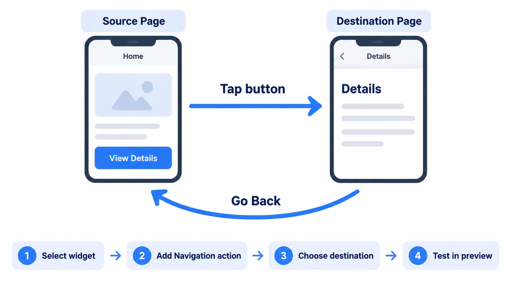

FlutterFlow Page Navigation
Step-by-step tutorial using your final project
Instructor Note
Use your final project for this tutorial. You do not need to build a new practice app. Open your existing FlutterFlow final project and choose two pages you have already created:
- A page with a button or other tappable widget
- The page you want that widget to open
You will add and test navigation between those two pages. All your work stays in your final project.
What you’ll learn
In this tutorial, you’ll use your final project to:
- Add a navigation action to a button
- Choose a destination page
- Test the navigation in your app
- Optionally pass information from one page to another
Step 1 — Open your final project
- Sign in to FlutterFlow.
- Open the FlutterFlow project you are using for your final project.
- In the Pages panel, identify:
- The page where you want to add a navigation button
- The page you want the button to open
Use the real page names from your project throughout this tutorial.
Step 2 — Choose a widget for navigation
- Open the page where you want the navigation button.
- Select an existing button or another tappable widget.
- If you don’t have one, add a Button widget and give it a clear label, such as View Details or Go to Profile.
Choose wording that makes sense for your app.
Step 3 — Add navigation to the destination page
- Select the button or tappable widget.
- Open its Actions settings.
- Add an action.
- Choose Navigation.
- Choose Navigate To.
- Select the page you want to open.
- Save or confirm the action.
When the user taps the widget, FlutterFlow should open the destination page you selected.
Step 4 — Add a way to return
On the destination page, add a button that lets the user go back or move on.
- Open the destination page.
- Select an existing button, or add a Button widget.
- Give it a clear label, such as Back or Return to Home.
- Open the button’s Actions settings.
- Add a navigation action:
- Choose Go Back to return to the previous page, or
- Choose Navigate To and select a specific page.
- Save or confirm the action.
Use Go Back when the user should return to the page they came from. Use Navigate To when you want the button to open a particular page.
Step 5 — Choose the right navigation action
Navigate To
Use Navigate To to open a specific page.
Example: A View Details button opens the details page.
Go Back
Use Go Back to return to the previous page in the navigation history.
Example: A Back button returns the user to the page they just left.
Replace Route
Use a route-replacement option when you want to open a new page and prevent the user from returning to the previous one using back navigation.
Example: After signing in, open the dashboard and prevent the user from returning to the login page using the back button.
NoteFlutterFlow’s interface and action names may change over time. If an option looks different, check the current navigation action menu in your project.
Step 6 — Test your navigation
- Run your app in FlutterFlow’s preview or test mode.
- Open the page containing your navigation widget.
- Tap the widget and confirm that the correct destination page opens.
- Test the return button, if you added one.
Troubleshooting
If navigation doesn’t work, check that:
- The action is attached to the correct widget.
- You selected the correct destination page.
- The action is enabled and saved.
- You’re testing the latest version of your project.
Optional challenge — Pass data to another page
If it suits your final project, try passing information from one page to another.
For example, a student profile page might receive a student’s name from a list page.
- Set up a page parameter on the destination page.
- Select the navigation widget on the source page.
- Open the navigation action’s parameter settings.
- Pass a value to the destination page.
- Display that value on the destination page.
Final project checklist
Before you finish, make sure:
- Your navigation action supports a real user task in your app.
- The button label makes it clear where the user will go.
- The correct destination page opens.
- Users have an appropriate way to return or continue.
- You tested the navigation in preview or test mode.
